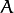
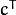
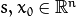
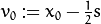
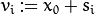
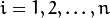
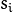
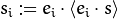
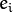
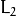

Optimization Algorithms
The algorithms in this section minimize or maximize function value within specified constraints or without any constraints.
solveLP
Solve given (non-integer) linear programming problem using the Simplex Algorithm (Simplex Method).
What we mean here by “linear programming problem” (or LP problem, for short) can be
formulated as:
Where is fixed 1-by-n row-vector,  is fixed m-by-n matrix, is fixed m-by-1 column vector and
 is an arbitrary n-by-1 column vector, which satisfies the constraints.
is an arbitrary n-by-1 column vector, which satisfies the constraints.
Simplex algorithm is one of many algorithms that are designed to handle this sort of problems efficiently. Although it is not optimal in theoretical
sense (there exist algorithms that can solve any problem written as above in polynomial type, while simplex method degenerates to exponential time
for some special cases), it is well-studied, easy to implement and is shown to work well for real-life purposes.
The particular implementation is taken almost verbatim from Introduction to Algorithms, third edition
by T. H. Cormen, C. E. Leiserson, R. L. Rivest and Clifford Stein. In particular, the Bland’s rule
(http://en.wikipedia.org/wiki/Bland%27s_rule) is used to prevent cycling.
-
C++: int solveLP(const Mat& Func, const Mat& Constr, Mat& z)
| Parameters: |
- Func – This row-vector corresponds to in the LP problem formulation (see above). It should contain 32- or 64-bit floating point numbers. As a convenience, column-vector may be also submitted, in the latter case it is understood to correspond to .
- Constr – m-by-n+1 matrix, whose rightmost column corresponds to in formulation above and the remaining to . It should containt 32- or 64-bit floating point numbers.
- z – The solution will be returned here as a column-vector - it corresponds to in the formulation above. It will contain 64-bit floating point numbers.
|
|---|
| Returns: | One of the return codes:
|
|---|
//!the return codes for solveLP() function
enum
{
SOLVELP_UNBOUNDED = -2, //problem is unbounded (target function can achieve arbitrary high values)
SOLVELP_UNFEASIBLE = -1, //problem is unfeasible (there are no points that satisfy all the constraints imposed)
SOLVELP_SINGLE = 0, //there is only one maximum for target function
SOLVELP_MULTI = 1 //there are multiple maxima for target function - the arbitrary one is returned
};
DownhillSolver
-
class DownhillSolver
This class is used to perform the non-linear non-constrained minimization of a function, defined on an n-dimensional Euclidean space,
using the Nelder-Mead method, also known as downhill simplex method. The basic idea about the method can be obtained from
(http://en.wikipedia.org/wiki/Nelder-Mead_method). It should be noted, that
this method, although deterministic, is rather a heuristic and therefore may converge to a local minima, not necessary a global one.
It is iterative optimization technique, which at each step uses an information about the values of a function evaluated only at
n+1 points, arranged as a simplex in n-dimensional space (hence the second name of the method). At each step new point is
chosen to evaluate function at, obtained value is compared with previous ones and based on this information simplex changes it’s shape
, slowly moving to the local minimum. Thus this method is using only function values to make decision, on contrary to, say, Nonlinear
Conjugate Gradient method (which is also implemented in optim).
Algorithm stops when the number of function evaluations done exceeds termcrit.maxCount, when the function values at the
vertices of simplex are within termcrit.epsilon range or simplex becomes so small that it
can enclosed in a box with termcrit.epsilon sides, whatever comes first, for some defined by user
positive integer termcrit.maxCount and positive non-integer termcrit.epsilon.
class CV_EXPORTS Solver : public Algorithm
{
public:
class CV_EXPORTS Function
{
public:
virtual ~Function() {}
virtual double calc(const double* x) const = 0;
virtual void getGradient(const double* /*x*/,double* /*grad*/) {}
};
virtual Ptr<Function> getFunction() const = 0;
virtual void setFunction(const Ptr<Function>& f) = 0;
virtual TermCriteria getTermCriteria() const = 0;
virtual void setTermCriteria(const TermCriteria& termcrit) = 0;
// x contain the initial point before the call and the minima position (if algorithm converged) after. x is assumed to be (something that
// after getMat() will return) row-vector or column-vector. *It's size and should
// be consisted with previous dimensionality data given, if any (otherwise, it determines dimensionality)*
virtual double minimize(InputOutputArray x) = 0;
};
class CV_EXPORTS DownhillSolver : public Solver
{
public:
//! returns row-vector, even if the column-vector was given
virtual void getInitStep(OutputArray step) const=0;
//!This should be called at least once before the first call to minimize() and step is assumed to be (something that
//! after getMat() will return) row-vector or column-vector. *It's dimensionality determines the dimensionality of a problem.*
virtual void setInitStep(InputArray step)=0;
};
It should be noted, that DownhillSolver is a derivative of the abstract interface Solver, which in
turn is derived from the Algorithm interface and is used to encapsulate the functionality, common to all non-linear optimization
algorithms in the optim module.
DownhillSolver::getFunction
Getter for the optimized function. The optimized function is represented by Solver::Function interface, which requires
derivatives to implement the sole method calc(double*) to evaluate the function.
-
C++: Ptr<Solver::Function> DownhillSolver::getFunction()
| Returns: | Smart-pointer to an object that implements Solver::Function interface - it represents the function that is being optimized. It can be empty, if no function was given so far. |
|---|
DownhillSolver::setFunction
Setter for the optimized function. It should be called at least once before the call to DownhillSolver::minimize(), as
default value is not usable.
-
C++: void DownhillSolver::setFunction(const Ptr<Solver::Function>& f)
| Parameters: |
- f – The new function to optimize.
|
|---|
DownhillSolver::getTermCriteria
Getter for the previously set terminal criteria for this algorithm.
-
C++: TermCriteria DownhillSolver::getTermCriteria()
| Returns: | Deep copy of the terminal criteria used at the moment. |
|---|
DownhillSolver::setTermCriteria
Set terminal criteria for downhill simplex method. Two things should be noted. First, this method is not necessary to be called
before the first call to DownhillSolver::minimize(), as the default value is sensible. Second, the method will raise an error
if termcrit.type!=(TermCriteria::MAX_ITER+TermCriteria::EPS), termcrit.epsilon<=0 or termcrit.maxCount<=0. That is,
both epsilon and maxCount should be set to positive values (non-integer and integer respectively) and they represent
tolerance and maximal number of function evaluations that is allowed.
Algorithm stops when the number of function evaluations done exceeds termcrit.maxCount, when the function values at the
vertices of simplex are within termcrit.epsilon range or simplex becomes so small that it
can enclosed in a box with termcrit.epsilon sides, whatever comes first.
-
C++: void DownhillSolver::setTermCriteria(const TermCriteria& termcrit)
| Parameters: |
- termcrit – Terminal criteria to be used, represented as TermCriteria structure (defined elsewhere in openCV). Mind you, that it should meet (termcrit.type==(TermCriteria::MAX_ITER+TermCriteria::EPS) && termcrit.epsilon>0 && termcrit.maxCount>0), otherwise the error will be raised.
|
|---|
DownhillSolver::getInitStep
Returns the initial step that will be used in downhill simplex algorithm. See the description
of corresponding setter (follows next) for the meaning of this parameter.
-
C++: void getInitStep(OutputArray step)
| Parameters: |
- step – Initial step that will be used in algorithm. Note, that although corresponding setter accepts column-vectors as well as row-vectors, this method will return a row-vector.
|
|---|
DownhillSolver::setInitStep
Sets the initial step that will be used in downhill simplex algorithm. Step, together with initial point (givin in DownhillSolver::minimize)
are two n-dimensional vectors that are used to determine the shape of initial simplex. Roughly said, initial point determines the position
of a simplex (it will become simplex’s centroid), while step determines the spread (size in each dimension) of a simplex. To be more precise,
if  are the initial step and initial point respectively, the vertices of a simplex will be:  and  for  where  denotes projections of the initial step of n-th coordinate (the result
of projection is treated to be vector given by , where  form canonical basis)
-
C++: void setInitStep(InputArray step)
| Parameters: |
- step – Initial step that will be used in algorithm. Roughly said, it determines the spread (size in each dimension) of an initial simplex.
|
|---|
DownhillSolver::minimize
The main method of the DownhillSolver. It actually runs the algorithm and performs the minimization. The sole input parameter determines the
centroid of the starting simplex (roughly, it tells where to start), all the others (terminal criteria, initial step, function to be minimized)
are supposed to be set via the setters before the call to this method or the default values (not always sensible) will be used.
-
C++: double DownhillSolver::minimize(InputOutputArray x)
| Parameters: |
- x – The initial point, that will become a centroid of an initial simplex. After the algorithm will terminate, it will be setted to the point where the algorithm stops, the point of possible minimum.
|
|---|
| Returns: | The value of a function at the point found.
|
|---|
createDownhillSolver
This function returns the reference to the ready-to-use DownhillSolver object. All the parameters are optional, so this procedure can be called
even without parameters at all. In this case, the default values will be used. As default value for terminal criteria are the only sensible ones,
DownhillSolver::setFunction() and DownhillSolver::setInitStep() should be called upon the obtained object, if the respective parameters
were not given to createDownhillSolver(). Otherwise, the two ways (give parameters to createDownhillSolver() or miss them out and call the
DownhillSolver::setFunction() and DownhillSolver::setInitStep()) are absolutely equivalent (and will drop the same errors in the same way,
should invalid input be detected).
-
C++: Ptr<DownhillSolver> createDownhillSolver(const Ptr<Solver::Function>& f, InputArray initStep, TermCriteria termcrit)
| Parameters: |
- f – Pointer to the function that will be minimized, similarly to the one you submit via DownhillSolver::setFunction.
- step – Initial step, that will be used to construct the initial simplex, similarly to the one you submit via DownhillSolver::setInitStep.
- termcrit – Terminal criteria to the algorithm, similarly to the one you submit via DownhillSolver::setTermCriteria.
|
|---|
ConjGradSolver
-
class ConjGradSolver
This class is used to perform the non-linear non-constrained minimization of a function with known gradient
, defined on an n-dimensional Euclidean space,
using the Nonlinear Conjugate Gradient method. The implementation was done based on the beautifully clear explanatory article An Introduction to the Conjugate Gradient Method Without the Agonizing Pain
by Jonathan Richard Shewchuk. The method can be seen as an adaptation of a standard Conjugate Gradient method (see, for example
http://en.wikipedia.org/wiki/Conjugate_gradient_method) for numerically solving the
systems of linear equations.
It should be noted, that
this method, although deterministic, is rather a heuristic method and therefore may converge to a local minima, not necessary a global one. What
is even more disastrous, most of its behaviour is ruled by gradient, therefore it essentially cannot distinguish between local minima and maxima.
Therefore, if it starts sufficiently near to the local maximum, it may converge to it. Another obvious restriction is that it should be possible
to compute the gradient of a function at any point, thus it is preferable to have analytic expression for gradient and computational burden
should be born by the user.
The latter responsibility is accompilished via the getGradient(const double* x,double* grad) method of a
Solver::Function interface (which represents function that is being optimized). This method takes point a point in n-dimensional space
(first argument represents the array of coordinates of that point) and comput its gradient (it should be stored in the second argument as an array).
class CV_EXPORTS Solver : public Algorithm
{
public:
class CV_EXPORTS Function
{
public:
virtual ~Function() {}
virtual double calc(const double* x) const = 0;
virtual void getGradient(const double* /*x*/,double* /*grad*/) {}
};
virtual Ptr<Function> getFunction() const = 0;
virtual void setFunction(const Ptr<Function>& f) = 0;
virtual TermCriteria getTermCriteria() const = 0;
virtual void setTermCriteria(const TermCriteria& termcrit) = 0;
// x contain the initial point before the call and the minima position (if algorithm converged) after. x is assumed to be (something that
// after getMat() will return) row-vector or column-vector. *It's size and should
// be consisted with previous dimensionality data given, if any (otherwise, it determines dimensionality)*
virtual double minimize(InputOutputArray x) = 0;
};
class CV_EXPORTS ConjGradSolver : public Solver{
};
Note, that class ConjGradSolver thus does not add any new methods to the basic Solver interface.
ConjGradSolver::getFunction
Getter for the optimized function. The optimized function is represented by Solver::Function interface, which requires
derivatives to implement the method calc(double*) to evaluate the function. It should be emphasized once more, that since Nonlinear
Conjugate Gradient method requires gradient to be computable in addition to the function values,
getGradient(const double* x,double* grad) method of a Solver::Function interface should be also implemented meaningfully.
-
C++: Ptr<Solver::Function> ConjGradSolver::getFunction()
| Returns: | Smart-pointer to an object that implements Solver::Function interface - it represents the function that is being optimized. It can be empty, if no function was given so far. |
|---|
ConjGradSolver::setFunction
Setter for the optimized function. It should be called at least once before the call to ConjGradSolver::minimize(), as
default value is not usable.
-
C++: void ConjGradSolver::setFunction(const Ptr<Solver::Function>& f)
| Parameters: |
- f – The new function to optimize.
|
|---|
ConjGradSolver::getTermCriteria
Getter for the previously set terminal criteria for this algorithm.
-
C++: TermCriteria ConjGradSolver::getTermCriteria()
| Returns: | Deep copy of the terminal criteria used at the moment. |
|---|
ConjGradSolver::setTermCriteria
Set terminal criteria for downhill simplex method. Two things should be noted. First, this method is not necessary to be called
before the first call to ConjGradSolver::minimize(), as the default value is sensible. Second, the method will raise an error
if termcrit.type!=(TermCriteria::MAX_ITER+TermCriteria::EPS) and termcrit.type!=TermCriteria::MAX_ITER. This means that termination criteria
has to restrict maximum number of iterations to be done and may optionally allow algorithm to stop earlier if certain tolerance
is achieved (what we mean by “tolerance is achieved” will be clarified below). If termcrit restricts both tolerance and maximum iteration
number, both termcrit.epsilon and termcrit.maxCount should be positive. In case, if termcrit.type==TermCriteria::MAX_ITER,
only member termcrit.maxCount is required to be positive and in this case algorithm will just work for required number of iterations.
In current implementation, “tolerance is achieved” means that we have arrived at the point where the -norm of the gradient is less
than the tolerance value.
-
C++: void ConjGradSolver::setTermCriteria(const TermCriteria& termcrit)
| Parameters: |
- termcrit – Terminal criteria to be used, represented as TermCriteria structure (defined elsewhere in openCV). Mind you, that it should meet termcrit.type==(TermCriteria::MAX_ITER+TermCriteria::EPS) && termcrit.epsilon>0 && termcrit.maxCount>0 or termcrit.type==TermCriteria::MAX_ITER) && termcrit.maxCount>0, otherwise the error will be raised.
|
|---|
ConjGradSolver::minimize
The main method of the ConjGradSolver. It actually runs the algorithm and performs the minimization. The sole input parameter determines the
centroid of the starting simplex (roughly, it tells where to start), all the others (terminal criteria and function to be minimized)
are supposed to be set via the setters before the call to this method or the default values (not always sensible) will be used. Sometimes it may
throw an error, if these default values cannot be used (say, you forgot to set the function to minimize and default value, that is, empty function,
cannot be used).
-
C++: double ConjGradSolver::minimize(InputOutputArray x)
| Parameters: |
- x – The initial point. It is hard to overemphasize how important the choise of initial point is when you are using the heuristic algorithm like this one. Badly chosen initial point can make algorithm converge to (local) maximum instead of minimum, do not converge at all, converge to local minimum instead of global one.
|
|---|
| Returns: | The value of a function at the point found.
|
|---|
createConjGradSolver
This function returns the reference to the ready-to-use ConjGradSolver object. All the parameters are optional, so this procedure can be called
even without parameters at all. In this case, the default values will be used. As default value for terminal criteria are the only sensible ones,
ConjGradSolver::setFunction() should be called upon the obtained object, if the function
was not given to createConjGradSolver(). Otherwise, the two ways (submit it to createConjGradSolver() or miss it out and call the
ConjGradSolver::setFunction()) are absolutely equivalent (and will drop the same errors in the same way,
should invalid input be detected).
-
C++: Ptr<ConjGradSolver> createConjGradSolver(const Ptr<Solver::Function>& f, TermCriteria termcrit)
| Parameters: |
- f – Pointer to the function that will be minimized, similarly to the one you submit via ConjGradSolver::setFunction.
- termcrit – Terminal criteria to the algorithm, similarly to the one you submit via ConjGradSolver::setTermCriteria.
|
|---|